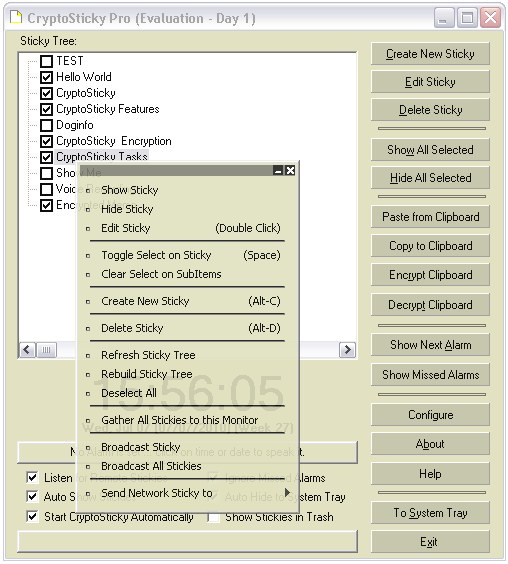
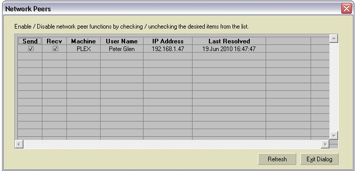
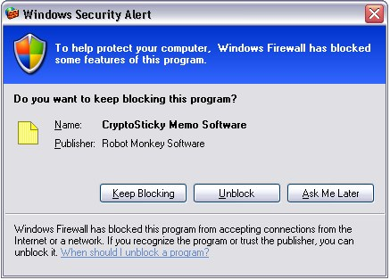

|
CryptoSticky can
be used
to transmit a sticky (or memo) to any computer on the network. This is
very useful facility to make effortless sticky sharing between
computers, for example a desktop
and a laptop. With this advanced facility, CryptoSticky can also be
deployed as an in-house (corporate)
messaging system. No configuration is
needed, thanks to modern networking technologies, CryptoSticky
installations will see each other across the network automatically. The
only requirement is that the machines need to be on the same
sub-network. (This is automatically true with most networks)
When
someone
broadcasts
a
memo,
CryptoSticky
sends
it to every active work station.
Workstations that are allowed to receive memos from the sender, will
save the network memo, the same way as they do any other memo. If the
memo exists on the target machine, is is compared to the pre-existing
version. If they are identical, the new memo is silently discarded. It
they are different, CryptoSticky will create an new memo with a number
suffix. "Memo for Steve" becomes "Memo for Steve#1". The the suffix
exists, it is incremented, so "Memo for Steve#1" becomes "Memo for
Steve#2".

|
On
the
screen
shot
to
the
left, the right click menu contains the
command 'Broad Cast Memo'. Clicking on this, will broadcast the
selected
memo throwout the network. Only stations that are configured to receive
it will receive this particular memo, and only stations are set to send
it to, will receive this particular memo.
One also has the option to 'Broadcast All memos'. This sends out
all memos to all workstations. New memos will appear on the target
workstations, memos that exist on the target workstations will be left
unchanged, and memos that changed will be displayed under a new name
with the serialization algorithm described above.
Broadcasting all memos is a safe option with minimal
network
traffic, as the memos are carefully checked for change, and the
conflict resolution does not modify or erase previous memos in any way.
Broadcasting all memos is also useful to synchronize memos
across
workstations. For example connecting a laptop to the network, starting
CryptoSticky, and broadcasting all memos will effectively synchronize
the memos from the laptop to the desktop. Broadcast is unidirectional.
When broadcasting from one machine, only memos that exist on that
machine are sent. Memos that exist on the other machine remain private
to that machine, as no facility is implemented for transmission in the
other direction. To synchronize bi-directionally, execute broadcast
from
the other machine as well.
One can also
selectively send a single sticky to workstation / user by selecting an
entry from 'Send Network Sticky to'.
|
All currently active
CryptoSticky
network stations are listed under this menu.
Safety and security is always a concern with networking. Here is
the precautions we took: 1.) Broadcast can only be done withing the
boundary of the sub-network. (This is actually a feature of the
network itself) 2.) CryptoSticky will not initiate broadcasts without
user intervention. 3.) All workstations can be configured to allow send
or allow receive to any one of other workstations. 4.) CryptoSticky
obeys the
system firewall. While this is the feature of the network as well,
network transmission to / from any workstation can be disabled by
answering "No" to the "Allow Exceptions" question in the firewall
prompt. 5.) Memos are only be broadcasts by the user's request, remote
stations cannot request memo broadcast.
Setting up networking:
|
CryptoSticky does
not require any setup on the network to
operate. (Aside from connecting the computer to the network)
However, one can control which workstation is allowed to send
to this
workstation, and which workstations this installation is allowed to
send to.
In the
'Configure' Dialog, click on the 'Show Net Peers' button and the Dialog
to the right displays.
One can freely check / uncheck any Send or Recv
checkbox, and
the
system will not allow traffic to that workstation
|
 |
in that particular
direction. The local machine is listed in the network peers dialog,
checking or un-checking the local machine configuration details has no
meaning, as the network sticky is not broadcast to the local machine;
The refresh button will re-load the current list of resolved
workstations, it will not initiate any name resolution request, and
will not initiate any result on network traffic.
Technical background:
|
CryptoSticky
networking works on
a proprietary machine resolution protocol implemented on top of TCP/IP.
When CryptoSticky starts on a new machine on the network, it announces
itself to the CryptoSticky peers, and requests all peers to acknowledge
the announcement with their network address. The protocol itself is
simple, fast, with virtually no network traffic.
If in your particular
environment, the visibility of a network name and use name
is not
desired,
disable port 2000 and port 2001.
If in your particular
setting, the transmission of the memos is not desirable,
disable port 2002.
If NO networking functionality is
preferable, disable it by answering "No" to the "Allow Exceptions"
question in the firewall prompt.
|

|
If
you want to receive memos, but do not want the memos to
appear automatically on your desktop, un-check 'Listen for
remote memos' on the main CryptoSticky Panel. If you do not want any
sound notifications, un-check the 'Enable Network Sticky Notify
Sound' from the configuration panel. If you do not want any beep
notifications, un-check the 'Enable Network Sticky Notify Beep'
from the configuration panel.
Copyright © by
RobotMonkeySoftware |